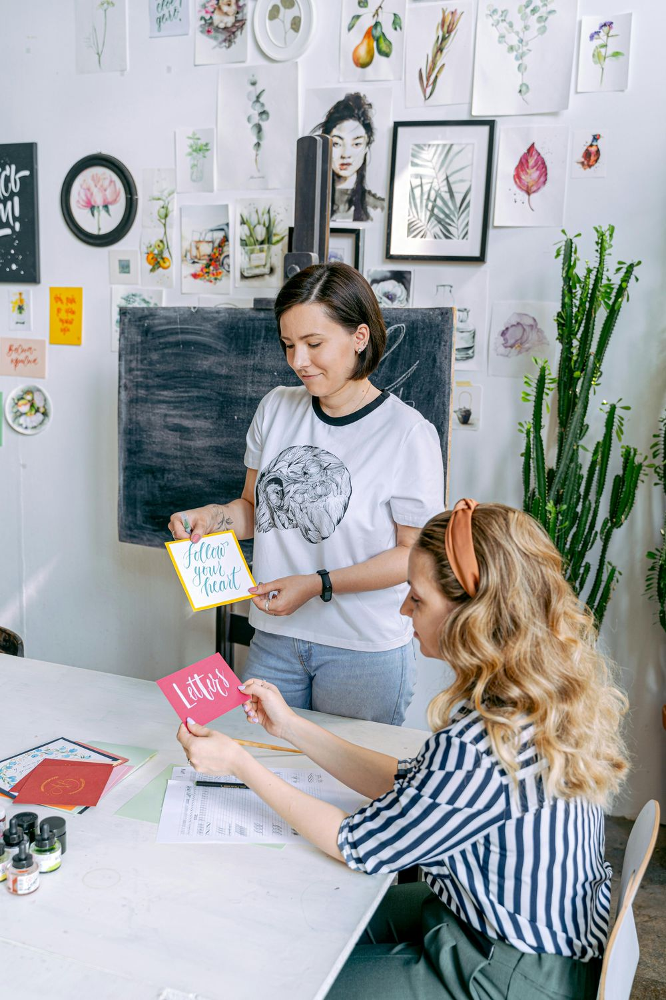

Sobre nosotros
En Artisan Prints, somos una plataforma dedicada a impulsar el talento creativo de pequeños artistas. Nuestro propósito es brindarles las herramientas y el apoyo necesarios para transformar sus ideas en productos únicos, tanto en formato 2D como 3D, que puedan llegar a manos de admiradores en todo el mundo.
Creemos en el poder del arte para conectar, inspirar y contar historias. Por eso, nos especializamos en la producción y distribución de piezas exclusivas, asegurándonos de que cada creación mantenga la esencia y calidad que sus artistas imaginaron.
Trabajamos de la mano con nuestros creadores, ofreciendo un proceso transparente y accesible, desde la producción hasta la venta. Al elegir nuestros productos, no solo adquieres piezas únicas, sino que también apoyas directamente a los talentos emergentes detrás de cada obra
Únete a nuestra misión de dar vida a grandes ideas y celebrar el arte independiente en todas sus formas. Porque cada artista merece ser escuchado y cada creación, compartida.
